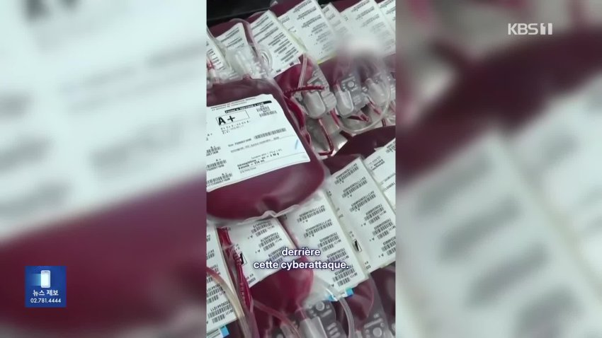
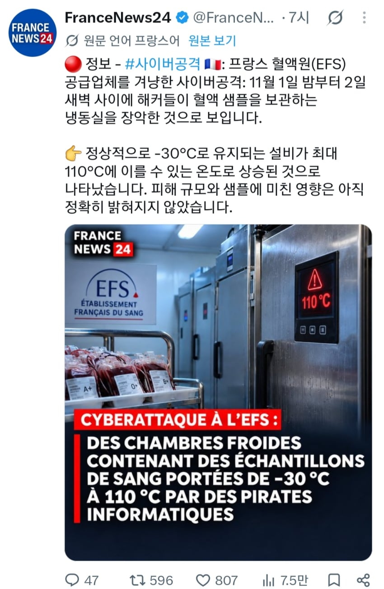
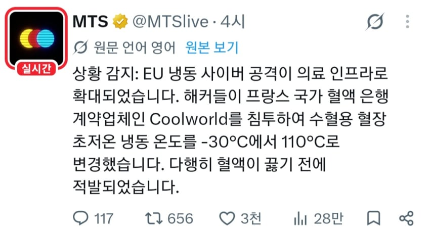
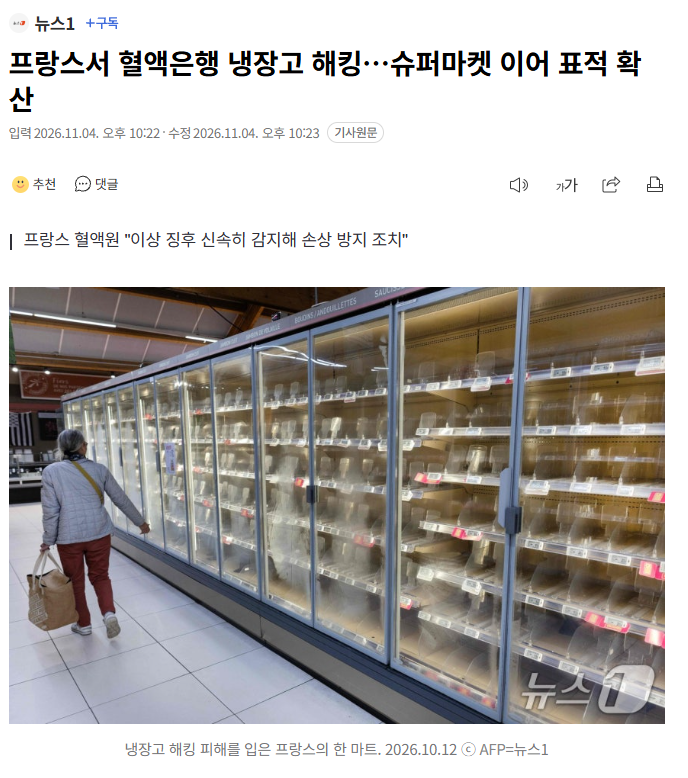

프랑스 혈액은행에서 해킹이 일어났음.
원래 혈액을 보관하는 냉장고는 -30도로 설정되어 있었는데
해킹으로 이 온도가 영상 110도 로 재설정당함
혈액이 다 뜨끈한 선지국밥이 되어버리면
프랑스에서 사고나면 걍 죽어야하는 비상사태가 일어날테지만
천만다행으로 시스템이 이걸 감지했고
혈액을 다른곳으로 다 옮겨서 피해는 없었다고 함
해킹의 배후는 아직 알려지지 않았지만 …
지금 지구촌 꼬라지를 보면
가능성이 높은 인물이 있다.
아씨 누구지


https://x.com/FranceNews24/status/2117721324160266597?a=ra5Af8qVjRuNp4WGNsg&s=19
피를 끓이려 했대
- 프랑스서 혈액은행 냉장고 해킹…슈퍼마켓 이어 표적 확산

프랑스에서 혈액은행의 냉장시설을 겨냥한 사이버 공격이 발생했다. 최근 유럽 각국의 대형 슈퍼마켓 냉장·냉동시설이 해킹으로 잇달아 오작동한 데 이어 혈액을 보관하는 보건기관까지 공격 대상이 됐다.
4일(현지시간) AP·로이터통신과 유로뉴스 등에 따르면 프랑스 혈액원(EFS)은 전날 밤 성명을 통해 "지난 2일 혈장 보관시설 3곳에서 온도와 제상 설정이 극도로 높은 수준으로 올라가는 일이 발생했다"고 밝혔다.
EFS는 "보건상 문제는 확인되지 않았고 혈액 제제 손실도 없었다"며 "모니터링·경보 시스템이 이상 징후를 신속히 감지해 직원들이 혈액 제제와 샘플의 손상을 방지하기 위한 조치를 취했다"고 설명했다.
이어 혈액 채취와 공급 업무는 차질 없이 진행되고 있으며, 병원 등 의료기관에 대한 혈액 서비스도 정상적으로 제공하고 있다고 강조했다.
이번 사태는 프랑스를 비롯한 유럽 여러 국가에서 슈퍼마켓의 냉장·냉동시설을 겨냥한 해킹 공격이 잇따르는 가운데 발생했다.
해커들은 야간에 원격으로 슈퍼마켓 냉장·냉동시설의 온도 설정을 급격히 높이는 수법을 사용한 것으로 전해졌다.
일부 시설에서는 온도 설정값이 최대 80도까지 올라가면서 보관 중이던 식료품이 대량 폐기되는 피해가 발생했다.
프랑스와 벨기에, 룩셈부르크, 스웨덴, 아일랜드 등 유럽 최소 11개국에서 관련 피해가 보고됐다.
https://n.news.naver.com/mnews/article/421/0009271022?rc=N&ntype=RANKING&sid=001

댓글
수집 당시 댓글 219개
· ㅇㅇ · 11.05 20:42:38
· ㅇㅇ · 11.05 21:02:15
· ㅇㅇ · 11.05 21:03:11
· ㅇㅇ · 11.05 21:11:56
· ㅋㅋㅋㅋ · 11.05 23:09:42
· ㅇㅇ · 11.06 00:12:31
· ㅇㅇ · 11.06 00:14:02
DC전사쿠루미쨩 · 11.05 19:18:01
우리이니 · 11.05 19:18:54
망분리좀 쳐해라
ㅇㅇ · 11.05 19:20:26
· ㅇㅇ · 11.05 19:21:49
· 소설쟁이 · 11.05 19:22:34
· ㅇㅇ · 11.05 19:23:46
· 소설쟁이 · 11.05 19:24:00
· ㅇㅇ · 11.05 20:13:43
· ㅇㅇ · 11.05 20:16:31
샨테 · 11.05 19:20:41
· 샨테 · 11.05 19:20:55
· ㅇㅇ · 11.05 20:14:21
ㅇㅇ · 11.05 19:21:03
ㅇㅇ · 11.05 19:21:04
ㅇㅇ · 11.05 19:21:47
아르웬의구리유두 · 11.05 19:23:07
익절 · 11.05 19:23:15
ㅇㅇ · 11.05 19:23:16
· ㅇㅇ · 11.05 19:23:23
ㅇㅇ · 11.05 19:24:08
ㅇㅇ · 11.05 19:24:51
ㅇㅇ · 11.05 19:24:54
· ㅇㅇ · 11.05 19:26:14
· ㅇㅇ · 11.05 19:27:11
· 2.1배TQQQ · 11.05 19:40:02
ㅇㅇ · 11.05 19:25:14
ㅇㅇ · 11.05 19:25:36
비해브 · 11.05 19:28:37
ㅇㅇ · 11.05 19:30:40
ㅇㅇ · 11.05 19:31:25
ㅇㅇ · 11.05 19:31:55
ㅇㅇ · 11.05 19:32:07
2456778 · 11.05 19:35:00
ㅇㅇ · 11.05 19:37:53
ㅇㅇ · 11.05 19:38:33
· ㅇㅇ · 11.05 19:39:52
· ㅇㅇ · 11.05 20:15:11
ㅇㅇ · 11.05 19:39:04
ㅇㅇ · 11.05 19:40:30
ㅇㅇ · 11.05 19:42:16
ㅇㅇ · 11.05 19:42:47
ㅇㅇ · 11.05 19:45:29
· ㅇㅇ · 11.05 20:00:01
ㅁㄴㅇㄹ · 11.05 19:47:51
· ㅁㄴㅇㄹ · 11.05 19:48:07
ㅇㅇ · 11.05 19:52:34
ㅇㅇ · 11.05 19:57:31
ㅇㅇ · 11.05 19:59:22
· ㅇㅇ · 11.05 20:11:01
ㅇㅇ · 11.05 20:00:02
· ㅇㅇ · 11.05 20:04:07
ㅇㅇ · 11.05 20:01:33
ㅇㅇ · 11.05 20:03:52
Savage3D · 11.05 20:04:45
ㅇㅇ · 11.05 20:06:07
· ㄴㄴ · 11.05 21:58:13
ㅇㅇ · 11.05 20:07:24
리마인 · 11.05 20:10:34
ㄲㅂ
ㅇㅇ · 11.05 20:15:10
ㅇㅇ · 11.05 20:35:22
ㅇㅇ · 11.05 20:38:03
ㅇㅇ · 11.05 20:52:09
ㅇㅇ · 11.05 21:04:13
타바코쉬카 · 11.05 21:10:38
ㅇㅇ · 11.05 21:21:02
ㅇㅇ · 11.05 21:21:17
ㅇㅇ · 11.05 21:54:13
· ㄴㄴ · 11.05 21:57:06
· ㅇㅇ · 11.06 00:09:46
ㄴㄴ · 11.05 21:57:40
ㅇㅇ · 11.05 22:07:25
ㅇㅇ · 11.05 22:08:00
ㅇㅇ · 11.05 22:08:37
ㅇㅇ · 11.05 22:14:00
oo · 11.05 22:24:58
· ㅇㅇ · 11.06 00:12:19
ㅇㅇ · 11.05 22:47:36
ㅇㅇ · 11.05 22:57:23
o o · 11.05 23:08:25
환란 전 교회 휴거 · 11.06 00:01:28
ㅇㅇ · 11.06 00:06:23
· ㅇㅇ · 11.06 00:07:00
ㅇㅇ · 11.06 00:06:49
· ㅇㅇ · 11.06 00:07:03
ㅇㅇ · 11.06 00:33:56
ㅇㅇ · 11.06 01:25:04
ㅇㅇ · 11.06 01:59:07
· ㅇㅇㄴㄴ · 11.06 02:53:52
운빨좆망겜 · 11.06 03:30:02
ㅇㅇ · 11.06 05:23:25
ㅇㅇ · 11.06 07:30:09
ㅇㅇ · 11.06 16:03:58
JungNu · 11.06 20:18:29
· ㅇㅇ · 11.05 11:48:23
· 비번까먹음 · 11.05 11:55:24
· 비번까먹음 · 11.05 11:56:24
· 와히라나고미 · 11.05 11:59:29
· 설탕물 · 11.05 12:25:12
· ㅇㅇ · 11.05 12:28:34
· 비번까먹음 · 11.05 12:29:37
· ㅇㅇ · 11.05 13:38:18
· ㅇㅇ · 11.05 13:40:11
· ㅇㅇ · 11.05 14:16:43
ㅇㅇ · 11.05 10:53:42
· ㅇㅇ · 11.05 11:23:24
· ㅇㅇ · 11.05 12:28:57
· ㅇㅇ · 11.05 14:42:43
· 00 · 11.05 19:13:53
· ㅇㅇ · 11.05 19:23:05
ㅇㅇ · 11.05 10:57:27
ㅇㅇ · 11.05 11:20:18
ㅇㅇ · 11.05 11:32:45
· ㅇㅇ · 11.05 11:36:16
· ㅇㅇ · 11.05 12:53:40
· ㅇㅇ · 11.05 13:13:43
· ㅇㅇ · 11.05 13:15:10
· ㅇㅇ · 11.05 19:22:02
· 시끄러 · 11.05 19:31:42
· ㅇㅇ · 11.05 19:39:06
ㅇㅇ · 11.05 11:35:50
· 진실의메타몽 · 11.05 11:38:51
· ㅇㅇ · 11.05 11:40:24
· 힐달라구우우우웃 · 11.05 11:41:01
· 비추의요정 · 11.05 11:50:30
· 바쇽 · 11.05 12:59:37
· 깡계1 · 11.05 16:49:29
· ㅇㅇ · 11.05 19:30:00
· ㅇㅇ · 11.05 19:43:43
· ㅇㅇ · 11.05 19:44:10
· ㅇㅇ · 11.05 19:56:59
ㅇㅇ · 11.05 11:38:29
ㅇㅇ · 11.05 11:42:27
ㅇㅇ · 11.05 11:44:34
· ㅇㅇ · 11.05 11:48:06
· ㅇㅇ · 11.05 11:48:33
· ㅇㅇ · 11.05 11:52:51
· Vcns · 11.05 11:59:55
· ㅇㅇ · 11.05 12:12:26
· 다칸 · 11.05 12:17:29
· ㅇㅇ · 11.05 14:44:02
· ㅇㅇ · 11.05 19:12:21
· ㅇㅇ · 11.05 19:43:31
· ㅇㅇ · 11.05 19:58:24
· ㅇㅇ · 11.05 19:59:12
ㅇㅇ · 11.05 11:49:27
ㅇㅇ · 11.05 11:56:47
안경음침녀 · 11.05 12:13:45
Rukara · 11.05 12:18:46
· ㅇㅇ · 11.05 12:41:24
· 산데비스탄 · 11.05 12:43:10
ㅇㅇ · 11.05 12:22:13
· ㅇㅇ · 11.05 20:31:32
10콜맨 · 11.05 12:26:17
코드치기귀찮아서만든계정 · 11.05 13:36:04
ㅇㅇ · 11.05 14:16:41
· ㅇㅇ · 11.05 20:04:00
PP사비 · 11.05 14:34:02
ㅇㅇ · 11.05 16:00:12
frostmire · 11.05 17:01:11
땨뗘(봇) · 11.05 19:10:05
ㅇㅇ · 11.05 19:10:39
· ㅇㅇ · 11.05 21:06:13
ㅇㅇ · 11.05 19:11:53
· 피트맛홍어 · 11.05 19:24:28
ㅇㅇ · 11.05 19:11:56
ㅇㅇ · 11.05 19:12:11
· ㅇㅇ · 11.05 20:26:23
ㅇㅇ · 11.05 19:12:38
· ㅇㅇ · 11.05 20:04:53
· ㅇㅇ · 11.05 20:20:17
ㅇㅇ · 11.05 19:12:45
ㅇㅇ · 11.05 19:12:47
ㅇㅇ · 11.05 19:13:19
· 2.1배TQQQ · 11.05 19:39:04
ㅇㅇ · 11.05 19:13:47
· ㅇㅇ · 11.05 20:05:41
ㅇㅇ · 11.05 19:14:17
ㅇㅇ · 11.05 19:14:36
· ㅇㅇ · 11.05 19:14:44
· ㅇㅇ · 11.05 22:50:04
ㅇㅇ · 11.05 19:14:44
· ㅇㅇ · 11.05 19:14:56
· ㅇㅇ · 11.05 19:15:05
· ㅇㅇ · 11.05 19:15:18
· ㅇㅇ · 11.05 19:18:16
· ㅇㅇ · 11.05 19:22:53
ㅇㅇ · 11.05 19:15:45
ㅇㅇ · 11.05 19:16:07
· 소설쟁이 · 11.05 19:20:24
· 소설쟁이 · 11.05 19:20:55
· 아르웬의구리유두 · 11.05 19:23:30
· ㅇㅇ · 11.05 19:29:05
· ㅇㅇ · 11.05 19:51:47
ㅇㅇ · 11.05 10:42:22
프로키온 · 11.05 10:42:45
ㅇㅇ · 11.05 10:43:13
· ㅇㅇ · 11.05 10:57:10
삭제됨 · 11.05 10:43:22
· Randosell · 11.05 10:45:16
· ㅇㅇ · 11.05 10:57:37
· · 11.05 11:33:17
· ㅇㅇ · 11.05 11:33:29
· 포멜로 · 11.05 11:33:55
· ㅇㅇ · 11.05 11:47:20
ㅇㅇ · 11.05 10:47:16
ㅇㅇ · 11.05 10:51:16
· ㅇㅇ · 11.05 10:55:14
· ㅇㅇ · 11.05 10:59:39
· ㅇㅇ · 11.05 11:06:59
· 애국은정신병 · 11.05 11:31:59
· 비번까먹음 · 11.05 11:41:01
· ㅇㅇ · 11.05 11:43:26